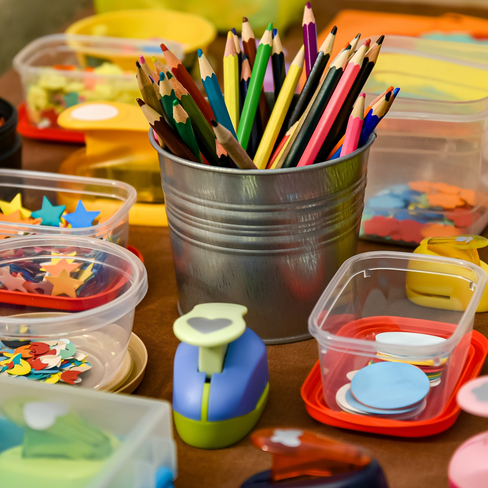
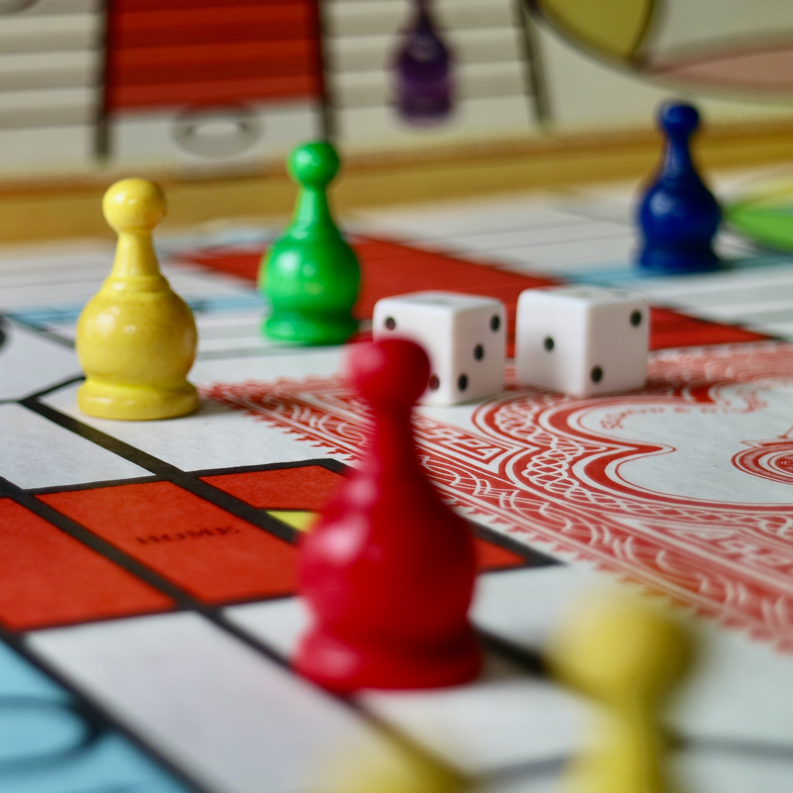
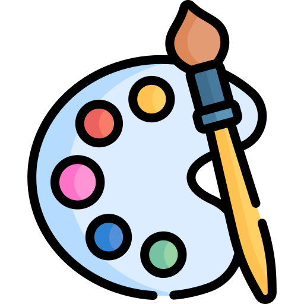
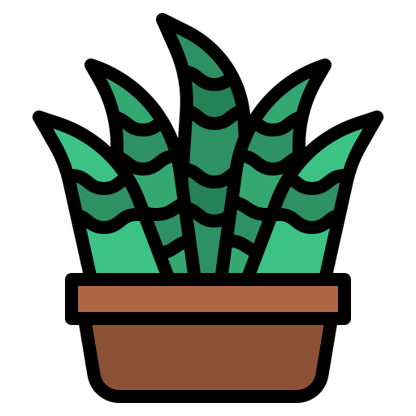

What Did People Do?
Alone to our own devices, how did people fill the time?
Below you can learn more about what hobbies people started, activities people found peace in, and other things people
did to keep themselves occupied.
According to a survey nationally conducted and based off of Google Trends observed in the peak of quarantine, these are the following rankings of activities people participated in.
#1
70% of those surveyed selected Watching TV Shows and Movies as their top hobby during quarantine.
#2
50% of those surveyed selected Reading as their top hobby during quarantine.
#3

35% of those surveyed selected Working Out as their top hobby during quarantine.
#4

33% of those surveyed selected Arts and Crafts as their top hobby during quarantine.
#5

33% of those surveyed selected Board Games as their top hobby during quarantine.
New Hobbies
Below are some hobbies that respondents stated they started during the pandemic, according to a survey sent out by the author.
 Playing the Guitar
Playing the Guitar

Drawing/Painting
Taiko Drumming
 Sewing
Sewing
 Producing Music
Producing Music
 Gaming
Gaming

Gardening
 Weightlifting
Weightlifting